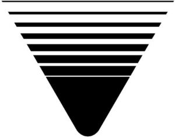

Trade Mark Journal No.2025/012 21 March 2025
WO0000001842813 (9,11,12,16,21)
Office of origin: Japan
Date of International Registration:18 September 2024
Date of designation in the UK:
18 September 2024

International priority date claimed: 29 August 2024
(Japan)
- Class 9
- Cash registers; electronic cash registers; measuring or testing machines and instruments; scales; electronic scales; price computing scales; electronic combination scales; digital counting scales; motion sensors; quantity indicators; measures; weighing apparatus and instruments; weighing machines; automatic weighing machines; gauges; telecommunication machines and apparatus; personal digital assistants; smartphones; electronic numeric displays; electronic scale with printer; point of sales system; computers; computer programs; smartphone programs; smartphone software; application software for smartphones; software and applications for mobile devices; data processing programs; computer programs for data processing; computer software programs; computer programs for use in telecommunications; application software; computer utility programs for file management; downloadable computer utility programs; downloadable computer software programs; computer software, recorded; computer utility programs; computer programs used for electronic cash register systems; downloadable applications for use with mobile devices; display units for computers; computer programs prerecorded data carriers; data processing equipment; electronic machines for reading credit cards; point of sale terminals and apparatus; bar code reader for POS systems; optical reader for POS systems; terminal for POS systems; keyboard for POS systems; point of sale terminals, apparatus and their parts; printers for POS systems; computers for POS systems; electronic tags for goods; radio-frequency identification [RFID] tags; radio-frequency identification [RFID] readers; readers and/or writers for electronic tags; terminals for electronically processing credit card payments; labels carrying electronically recorded or encoded information; labels with machine-readable codes; labels with integrated radio frequency identification [RFID] chips; bar code labels, encoded; printers; computer printers; ink-jet printers; Impact printers; color printers; laser color printers; ticket printers; scanners [data processing equipment]; bar code printers; bar code scanners; bar code readers; electronic labels; downloadable music files; downloadable image files; electronic publications.
- Class 11
- Air conditioners for industrial purposes; cooling appliances and installations; cooling installations and machines; freezing machines and apparatus for industrial purposes; refrigerating or freezing showcases; heated display cabinets; refrigerating display cabinets; cooking apparatus and installations for commercial use; cooking and preservation equipment for candy for commercial use; cooking and preservation equipment for snack for commercial use; cooking and preservation equipment for cereal for commercial use; refrigerated draft beer dispensers for commercial use; refrigerated juice dispensers for commercial use; refrigerated wine dispensers for commercial use; refrigerated cocktail dispensers for commercial use; refrigerated cold sake dispensers for commercial use; refrigerated beverage dispensers for commercial use; soft ice cream dispensers for commercial use; ice cream dispensers for commercial use; heating apparatus for dispensing soups for commercial use; heating and cooling apparatus for dispensing coffee for commercial use; heating and cooling apparatus for dispensing tea for commercial use; heating and cooling apparatus for dispensing hot and cold food and beverages; electric food warmers; temperature-controlled food and beverage dispensing units, other than vending machines; heating and cooling apparatus for dispensing hot and cold beverages; refrigerated beverage dispenser, other than vending machines.
- Class 12
- Automatic guided vehicles; automatically guided [driverless] material handling tractors; shopping carts; carts; roll cage trolleys; handling carts.
- Class 16
- Label printers; hand labelling appliances; inking ribbons; ink ribbon; ink ribbon for printing; bar code ribbons; ink ribbon for label; ink ribbon for printer; ink ribbon for label printer; ink ribbon for computer printer; packaging containers of paper; packaging containers of paper for industry; paper for wrapping and packaging; bags [pouches] of plastics, for packaging; bags [pouches] of vinyl, for packaging; plastic films used as packaging for food for industrial purposes; plastic films used as packaging for food; plastic film for wrapping; plastic film roll stock for packaging; plastic film for wrapping for industry; paper and cardboard; corrugated paper; linerboard for corrugated cardboard; printing paper; printer paper; roll paper for computer; printer paper for computer; roll paper for printing; stationery; office stationery; seals [stationery]; stickers [stationery]; price tags; label paper; paper labels; cardboard labels; adhesive labels of paper; printed paper labels; tags of paper or cardboard; printed matter; coupons.
- Class 21
- Industrial packaging containers of glass or porcelain; industrial packaging containers of glass, not including glass stoppers, lids and covers; industrial packaging glass containers for food; industrial packaging glass containers for beverages; glass jars; industrial packaging containers of ceramics; dinnerware, other than knives, forks and spoons; glass beverageware; beverage glassware; glass mugs; ceramic mugs; plastic mugs; plastic plates; beverageware; ceramic bowls; plastic bowls; glass bowls; preserve glasses; glass storage jars; plastic containers for dispensing food and beverages; candy dispensers; snack dispensers; cereal dispensers; draft beer dispensers; juice dispensers; wine dispensers; cocktails dispensers; cold sake dispensers; refrigerated beverage dispensers; soft ice cream dispensers; ice cream dispensers; soups dispensers; coffee dispensers; tea dispensers; food and beverage dispensers.
Teraoka Seiko Co., Ltd.
Representative: MURAYAMA Yasuhiko, c/o Shiga International Patent Office,, GranTokyo South Tower,, 1-9-2, Marunouchi,, Chiyoda-ku, Tokyo 100-6620, JAPAN